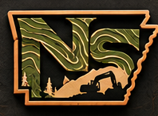
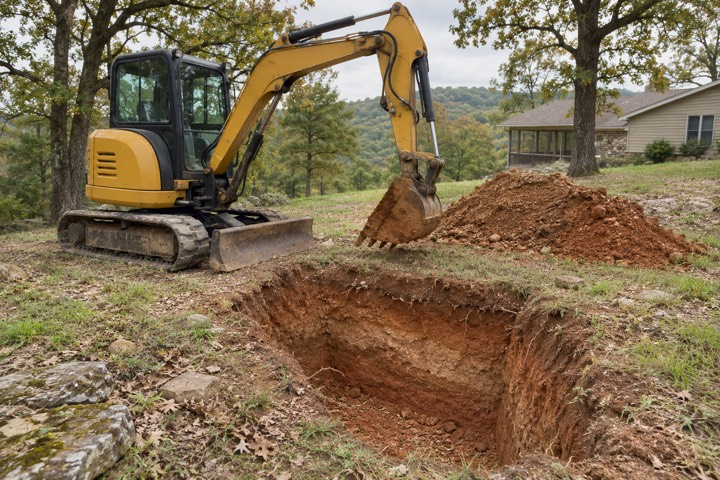

Driveways & access
Surface grading, maintenance and agreed access improvements.

NATURAL STATESITEWORKS · SERVICE CONCEPTProposed Siteworks customer experience
A separate service path for driveways, access, drainage and site improvements. Tell us the scope, property location and access conditions so the work can be quoted clearly.
Preview a sitework inquiry ↓
This is the customer-page concept for a proposed Natural State Siteworks business. Engineering evaluations and separately quoted site work would have distinct scopes, contracts and invoices. Customers would choose their contractor independently.
How the relationship and additional-work disclosure would be explained ↗Surface grading, maintenance and agreed access improvements.
Defined brush, debris and site-cleanup scopes.
Property-specific scopes with technical review where required.
Prepare agreed work areas and coordinate with the project’s qualified providers.
Use fictional information to see the scope summary. This concept form sends no messages and creates no appointment or job record.